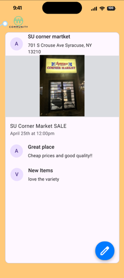

Our final design is much cleaner, with a primarily orange and blue color scheme. When the app is opened, the user is greeted by a login page. We implemented a few new features to this iteration, including the ability to
leave comments on event posts.
When uploading an event, a location on Google Maps can be added, which will show up for users who view the event.

Events appear in the “Current Events” feed and can be saved and viewed in the “My Events” page. Users can RSVP to events and in some cases buy tickets for events.